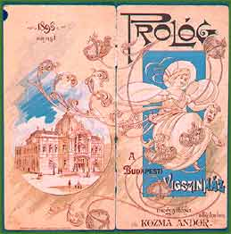

|  | |||
| The Comedy Theatre was opened in Pest, in the vicinity of mills and factories, in 1896. It soon became the favourite theatre of the middle classes in Pest, and the place of many Jewish actors’ successes. Its founder and owner was Gábor Faludi (1846–1932). | |||